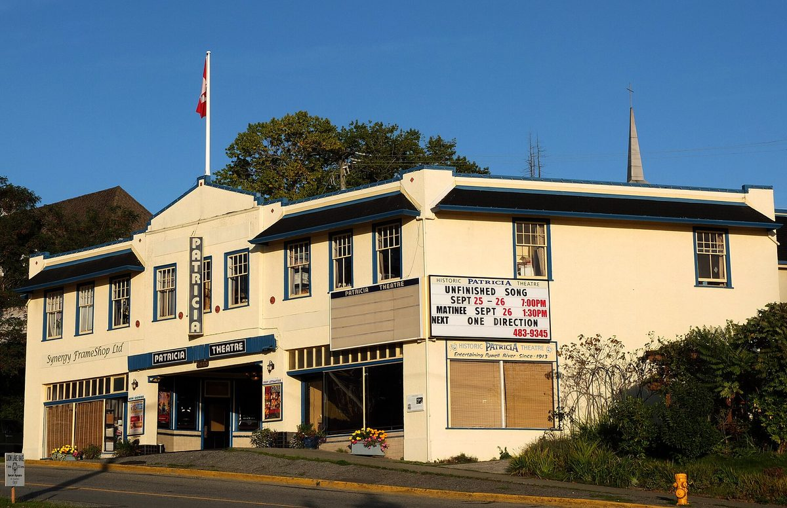

캐나다 최장수 영화관 패트리샤 극장 지붕에 24kW 시민소유 태양광…주민 최소 500달러 출자로 공동소유자 모집

BC주 카텟 지역 극장은 지붕만 내주고 전기를 사 써…솔셰어가 사업 맡고 노동자협동조합 VREC 솔라가 시공, 지역 주민 먼저 모집한 뒤 BC주 주민으로 넓혀 11월 4일 마감
캐나다 브리티시컬럼비아(BC)주 카텟(qathet, 파월리버 일대)에서 캐나다에서 가장 오래 상영을 이어 온 영화관으로 꼽히는 패트리샤 극장(Patricia Theatre) 지붕에 주민이 공동으로 소유하는 24kW 태양광이 들어서고 있다. 시민소유 태양광 사업체 솔셰어(SolShare Energy)가 사업을 맡고 노동자협동조합인 밴쿠버 재생에너지협동조합(VREC Solar)이 설계와 시공을 맡아, 10월 21일부터 100년 된 극장 건물에 패널을 올리기 시작했다. 극장을 운영하는 카텟 영화협회는 지붕을 내주고 여기서 나온 전기를 사서 BC 하이드로에서 받던 전기의 상당 부분을 대신하며, 설치에 드는 비용은 내지 않는다. 공동소유자는 전기 판매 수입에서 배당을 받고, 솔셰어는 세액공제를 활용해 설비비를 낮췄다고 설명했다. 지역 소유를 넓히려고 카텟 주민에게 먼저 공동소유자 신청 기회를 줬고 10월 26일 뒤로는 BC주 주민 누구나 참여할 수 있으며, 최소 출자액은 500달러(캐나다 달러), 신청 마감은 11월 4일이다. 사업은 지역 환경활동가 찰리 라티머(Charlie Latimer)가 이끌었고, 게리 실링(Gary Shilling) 영화협회 사무국장은 "우리는 지붕을 내주고 그들은 설비를 댄다"고 말했다.
시민에너지 관점
24kW라는 작은 설비지만 최소 500달러로 이웃이 주인이 되고 지역 주민에게 먼저 문을 연 이번 방식은, 프랑스 파리의 시민 태양광 협동조합 엔에르시티프가 조합원 425명과 함께 시 소유 건물 지붕 23곳에 1,180kWc를 올린 길과 닮았다. 소액 출자로는 돌아오는 몫이 작다는 지적이 나올 수 있지만, 이런 사업의 값은 배당액보다 지붕을 내준 문화시설은 설치비 없이 깨끗한 전기를 얻고 주민은 그 발전소의 주인이 된다는 데 있다. 엔에르시티프가 학생과 최저 사회급여 수급자에게 10유로 출자를 열어 둔 것처럼 문턱을 낮출수록 에너지 전환의 이익은 더 많은 사람에게 돌아간다. 우리 지역의 극장·도서관·마을회관 지붕도 주민 소액 출자 발전소가 될 수 있도록 공공·문화시설 지붕 임대와 시민 출자 절차부터 쉽게 고쳐야 한다.
출처: Powell River Peak 2026-10-27 Tanya Hill 원문 보기
カナダ最古の映画館パトリシア劇場の屋根に24kWの市民所有太陽光…住民が最低500ドルの出資で共同所有者に
BC州カセット地域の劇場は屋根を貸して電気を買う…ソルシェアが事業を担い労働者協同組合VREC Solarが施工、まず地元住民から募りBC州住民に広げて11月4日締め切り
カナダ・ブリティッシュコロンビア（BC）州のカセット（qathet、パウエルリバー一帯）で、カナダで最も長く上映を続けてきた映画館とされるパトリシア劇場（Patricia Theatre）の屋根に、住民が共同で所有する24kWの太陽光発電設備が設けられている。市民所有の太陽光事業体ソルシェア（SolShare Energy）が事業を担い、労働者協同組合のバンクーバー再生可能エネルギー協同組合（VREC Solar）が設計と施工を受け持ち、10月21日から築100年の劇場にパネルを載せ始めた。劇場を運営するカセット映画協会は屋根を提供し、そこで生まれた電気を買ってBCハイドロから受けていた電気の多くを置き換え、設置費用は負担しない。共同所有者は売電収入から配当を受け、ソルシェアは税額控除を活用して設備費を抑えたと説明している。地元の所有を広げるため、まずカセットの住民に共同所有者の申し込み機会を設け、10月26日以降はBC州の住民なら誰でも参加でき、最低出資額は500ドル（カナダドル）、申し込みは11月4日に締め切る。事業は地元の環境活動家チャーリー・ラティマー（Charlie Latimer）氏が主導し、映画協会のゲーリー・シリング（Gary Shilling）事務局長は「私たちは屋根を出し、彼らが設備を出す」と話した。
市民エネルギーの視点
24kWという小さな設備だが、最低500ドルで隣人が持ち主になり、地元住民に先に門戸を開いた今回のやり方は、フランス・パリの市民太陽光協同組合エネルシティフ（Enercitif）が組合員425人とともに市所有の建物の屋根23カ所に1,180kWcを設けた道と似ている。少額出資では戻りが小さいとの指摘もあるだろうが、この種の事業の価値は配当額よりも、屋根を貸した文化施設が設置費なしにクリーンな電気を得て、住民がその発電所の持ち主になる点にある。エネルシティフが学生や最低限の社会給付の受給者に10ユーロからの出資を開いているように、敷居を下げるほどエネルギー転換の利益はより多くの人に届く。韓国の地域の劇場や図書館、集会所の屋根も住民の少額出資による発電所になれるよう、公共・文化施設の屋根の貸し出しと市民出資の手続きからまず簡単にすべきだ。
出典: Powell River Peak 2026-10-27 Tanya Hill 原文を読む
加拿大最长寿电影院帕特里夏剧院屋顶装设24kW市民所有光伏…居民最低出资500加元即可成为共同所有者
BC省qathet地区剧院只提供屋顶并购买所发电力…SolShare负责项目、工人合作社VREC Solar施工，先向当地居民招募再扩大到全省居民，11月4日截止
在加拿大不列颠哥伦比亚省（BC省）的qathet地区（鲍威尔河一带），被视为加拿大持续放映时间最长的电影院帕特里夏剧院（Patricia Theatre）屋顶上，一套由居民共同所有的24kW光伏系统正在安装。市民所有的光伏企业SolShare Energy负责项目，工人合作社温哥华可再生能源合作社（VREC Solar）负责设计和施工，自10月21日起开始在这座有百年历史的剧院上安装光伏板。经营剧院的qathet电影协会提供屋顶，购买所发电力，以取代原本向BC Hydro购买的大部分电力，安装费用无需承担。共同所有者从售电收入中获得分红，SolShare表示已利用税收抵免压低了设备成本。为扩大本地所有权，项目先向qathet居民开放共同所有者申请，10月26日以后BC省居民均可参与，最低出资额为500加元，申请于11月4日截止。项目由当地环保人士Charlie Latimer牵头推动，电影协会执行主任Gary Shilling表示：“我们提供屋顶，他们提供设备。”
市民能源视角
24kW虽然是小设备，但用最低500加元就能让邻居成为主人、并优先向当地居民开放，这种做法与法国巴黎市民光伏合作社Enercitif和425名社员一起在23处市属建筑屋顶装设1,180kWc光伏的道路相似。有人会说小额出资回报有限，但这类项目的价值不在分红多少，而在于出借屋顶的文化设施不花安装费就能用上清洁电力，居民则成为发电站的主人。正如Enercitif向学生和领取最低社会救助的人开放10欧元起的出资，门槛越低，能源转型的收益就能惠及越多的人。韩国各地的剧院、图书馆和村会馆屋顶也应能成为居民小额出资的发电站，首先要简化公共和文化设施屋顶出租以及市民出资的程序。
来源: Powell River Peak 2026-10-27 Tanya Hill 查看原文
24kW community-owned solar goes onto the roof of Canada's longest-running cinema, the Patricia Theatre, with residents invited to buy in from $500
The theatre in BC's qathet region provides the roof and buys the power; SolShare runs the project and worker co-op VREC Solar installs it, with local residents offered shares first before the offer opens to all British Columbians until November 4
A 24kW solar system jointly owned by community members is going onto the roof of the Patricia Theatre in qathet, the Powell River area of British Columbia, a cinema described as the longest-running movie theatre in Canada. The community-owned solar company SolShare Energy is running the project, with the worker co-operative Vancouver Renewable Energy Co-operative (VREC Solar) designing and installing it, and crews began putting panels on the 100-year-old building on October 21. The qathet Film Society, which runs the theatre, provides the roof and buys the power produced, displacing much of the electricity it used to take from BC Hydro, and pays nothing for the installation. Shareholders receive dividends from the electricity sales, and SolShare says it kept the capital cost down by using tax credits. To favour local ownership, qathet residents were given the first chance to apply as co-owners; after October 26 the offer opened to all BC residents, with a minimum investment of $500 (Canadian) and applications closing on November 4. The project was spearheaded by local environmental advocate Charlie Latimer, and film society executive director Gary Shilling said: "We provide the roof and they supply the equipment."
Citizen Energy View
The system is small at 24kW, but letting neighbours become owners from $500 and giving local residents first call follows a path similar to that of Paris citizen solar co-operative Enercitif, which with 425 members has put 1,180kWc on 23 roofs of city-owned buildings. Some will say small stakes bring small returns, yet the value of such projects lies less in the dividend than in the fact that a cultural venue lending its roof gets clean power at no installation cost while residents become owners of the plant. As Enercitif opens membership from 10 euros for students and people on minimum social benefits, the lower the threshold, the more people share in the gains of the energy transition. So that local theatres, libraries and village halls can become small-share community power plants, the rules for leasing public and cultural roofs and for citizen investment should be simplified first.
Source: Powell River Peak 2026-10-27 Tanya Hill Read the original